Home Range Analysis:
Calandra Stanley, M.Sc., Ph.D. Candidate
Project Description and Context
In this module you will learn how to use to calculate animal home ranges in R. We will be using two different datasets from radiotracked songbirds. We will use two different methods (minimum convex poygon and kernel density estimator) using the adehabitatHR package (Calenge 2006) in R. We will also learn how to use satellite remote sensing layers to extract environmental data from our calculated home ranges.
Exercise Objectives
- Practice importing and formatting spatial data
- Learn how to construct minimum convex polygon and kernel density estimator
- Learn how to extract home range size
- Practice how to explore your raster data visually and quantitatively
- Practice how to extract values from raster data to polygon overlay
Setup
We will start by loading the primary libraries and some additional functions that provide us with the tools for home range analysis.
# Some additional functions are needed:
library(RCurl)
source('https://www.dropbox.com/s/t4bxf2olztv8alx/packages_and_setup.R?dl=1')
library(raster) # Package for working with raster files
library(adehabitatHR)
library(maptools)
library(maps)
library(rgdal)
library(tidyr)Points to consider when performing home range analysis
- usually 30-50 independent points is sufficient (Seaman and Millspaugh 1999)
- consider biological (Lair 1987) vs. statistical independence
- can bootstrap to perform an asymptote analysis to see if home range size stabilizes
Import Data Set
First we will import the first practice data set. These are locations data from songbirds radiotracked in Puerto Rico. Location data is in UTM format, the units are meters.
Set the working directory and import data from a csv file. The “na.strings” argument replaces missing values with NA.
locs <-
read.csv(
"https://www.dropbox.com/s/uxrbfxwi8l7k9lx/RSHomeRangeData.csv?dl=1",
header = T,
na.strings=c("NA", "NULL", "", "."))Take a quick look at how many location estimates we have for each of three birds:
table(locs$bird)##
## RSFA_BK,O RSMBK,BK_A YWFA,Y_G
## 99 89 23Prepare data for home range analysis
We will first create a SpatialPointsDataFrame of the location data. SpatialPoints or SpatialPointsDataFrame is the object format that the location point data needs to be in to perform the home range analysis (and many spatial analyses in R). Since we have multiple birds we will use a SpatialPointsDataFrame so that we can include a column with IDs.
Extract the coordinates from the dataframe:
xyt <-
subset(
locs,
select = c(X,Y))Extract the birds IDs from the dataframe:
id <-
subset(
locs, select = bird)Create the SpatialPointsDataFrame:
locs1 <-
id
coordinates(locs1) <-
xyt
# Assign coordinate reference system
proj4string(locs1) <-
CRS("+proj=utm +zone=20 +datum=WGS84")Confirm the class of the object and check summary information:
class(locs1) ## [1] "SpatialPointsDataFrame"
## attr(,"package")
## [1] "sp"summary(locs1)## Object of class SpatialPointsDataFrame
## Coordinates:
## min max
## X 188332.4 188439
## Y 1997248.6 1997321
## Is projected: TRUE
## proj4string :
## [+proj=utm +zone=20 +datum=WGS84 +ellps=WGS84 +towgs84=0,0,0]
## Number of points: 211
## Data attributes:
## bird
## RSFA_BK,O :99
## RSMBK,BK_A:89
## YWFA,Y_G :23Let’s plot the point data:
plot(
locs1,
col=as.data.frame(locs1)[,1]) #specifies unique color for each bird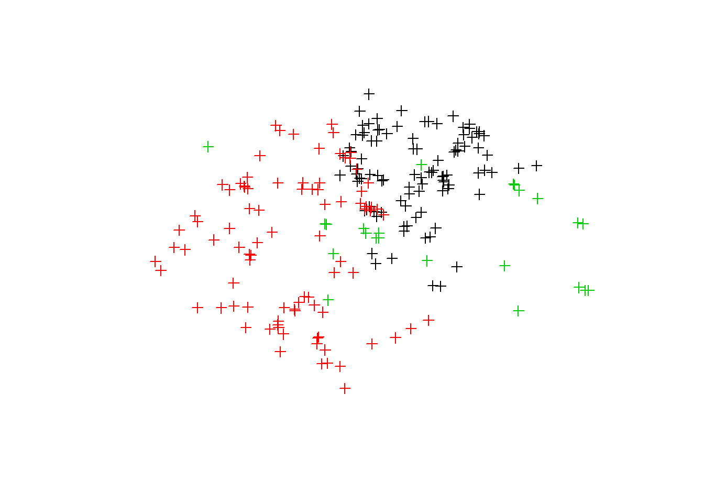
Now let’s plot the point data on a map. First we need to convert the UTMs to longitude and latitude so it can be projected onto a larger map.
# Create new dataframe for reprojected data
locs1Map <-
locs1
locs1Map <-
spTransform(
locs1,
CRS("+proj=longlat +datum=WGS84"))We will use the map function you used earlier this lab to call a map of Puerto Rico. We will turn it into a SpatialPolygon to map the SpatialPoints on top of.
pR <-
map(
"world",
"Puerto Rico",
fill=T)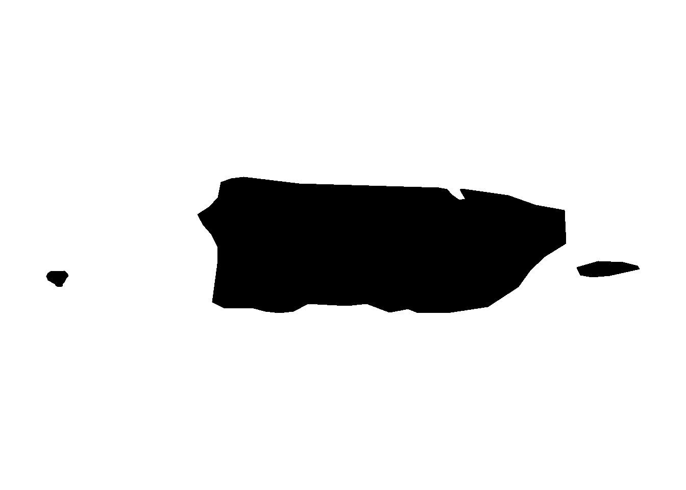
IDs <- sapply(strsplit(pR$names, ":"), function(x) x[1])
pRP<-map2SpatialPolygons(pR, IDs = IDs, proj4string = CRS("+proj=longlat +datum=WGS84"))Plot polygon of Puerto Rico and locations together:
plot(pRP)
points(locs1Map, col=as.data.frame(locs1)[,1])#points overlays the location estimates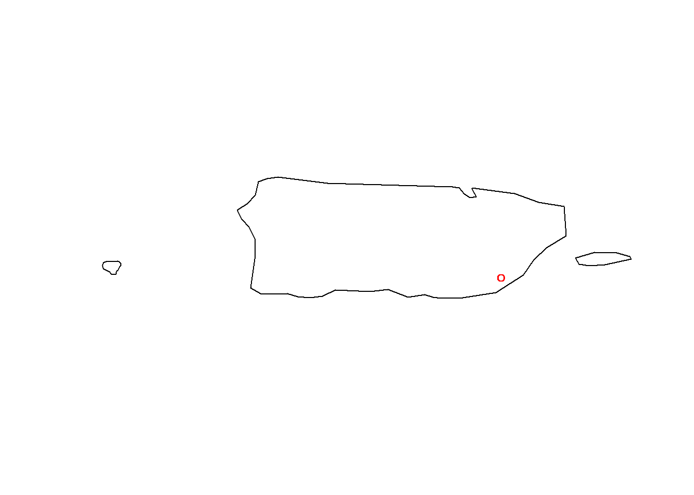
Minimum Convex Polygon
This is the most widely used and simplest method for estimating an animal’s home range. It consists of creating the smallest convex polygon than encompasses all the location estimates. To account for outliers in the data, where animals may have temporarily left their home range, a small percentage of points is often omitted.
Run the 95% minimum convex polygon analysis to create all three home range as a SpatialPolygonDataFrame:
cp<-mcp(locs1[,1], percent=95)Graph the polygons and the points together:
plot(
cp,
border=as.data.frame(cp)[,1])
plot(
locs1,
col=as.data.frame(locs1)[,1],
add=T)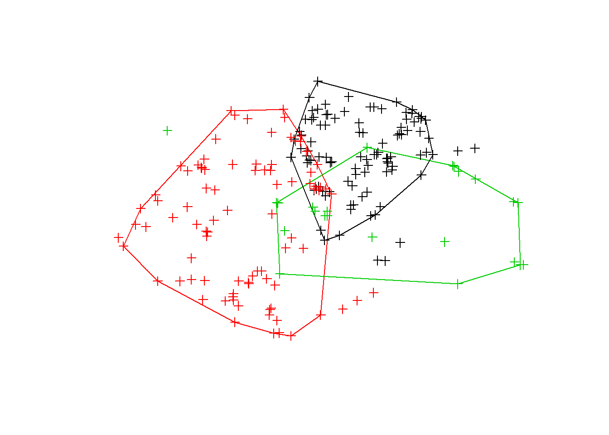
The area of the three polygons will be listed in ha.
cp## Object of class "SpatialPolygonsDataFrame" (package sp):
##
## Number of SpatialPolygons: 3
##
## Variables measured:
## id area
## RSFA_BK,O RSFA_BK,O 0.1021694
## RSMBK,BK_A RSMBK,BK_A 0.2216984
## YWFA,Y_G YWFA,Y_G 0.1786882The polygons can be written to a shapefile in the source directory so that in can be read into a GIS or GoogleEarth.
writeOGR(
cp,
dsn="cp.shp",
layer="cp",
driver="ESRI Shapefile")Or can be exported as a dataframe.
write.csv(
as.data.frame(cp),
"MCP.csv")Kernel Density Estimation
This section teaches you how to calculate home range size using the kernel density estimator. This provides a more formalized approach to the calculation of home range size based on the utilization distribution (UD). Using this model the animals use of space can be described as a bivariate probability density function (the UD) which gives the animal’s relative frequency of occurrence in a two-dimensional (x,y) distribution (can be extended into 3D as well).
We will use a Kernel estimator to calculate the utilization distribution (Worton, 1989). The kernel method consists of placing a kernel (a probability density) over each location estimate in the sample. The values of these functions are averaged together (where they overlap), thus the density estimate will be high in areas with many observation, and low in areas with few.
h is the smoothing parameter and controls the width of the kernel functions place over each point. The two most common choices of h are to use a “reference bandwidth” (“href”) or the LSCV (least square cross validation) to compute the h. Here we will use the LSCV method.
kud<-kernelUD(locs1[,1], h="LSCV")This produces a raster of the class SpatialPixelDataFrame:
kud## ********** Utilization distribution of several Animals ************
##
## Type: probability density
## Smoothing parameter estimated with a LSCV smoothing parameter
## This object is a list with one component per animal.
## Each component is an object of class estUD
## See estUD-class for more informationWe can visualize:
image(kud)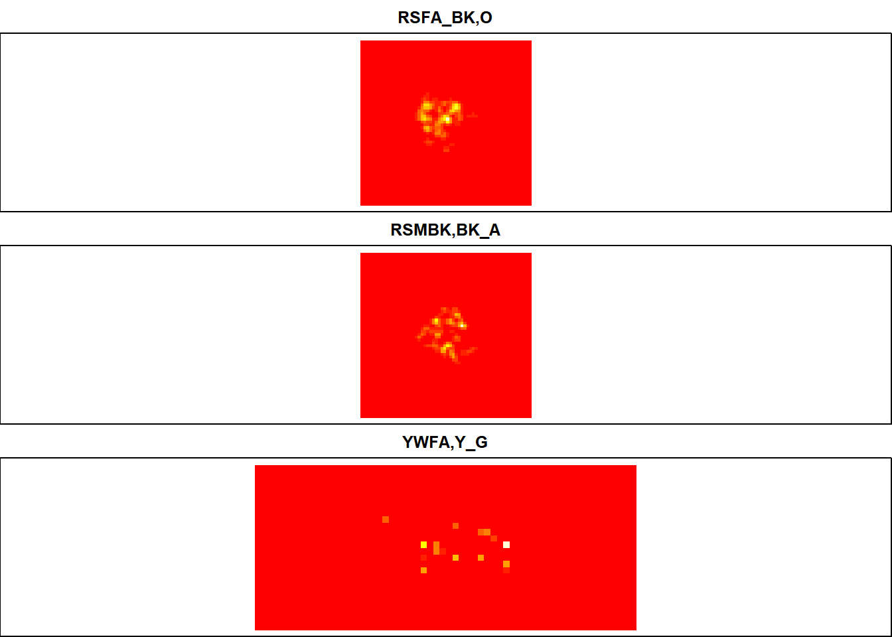 It is important to check that the cross-validation criterion converges towards a solution in the specified interval, if not the estimate should not be used. This can be visualized in the plots below.
plotLSCV(kud)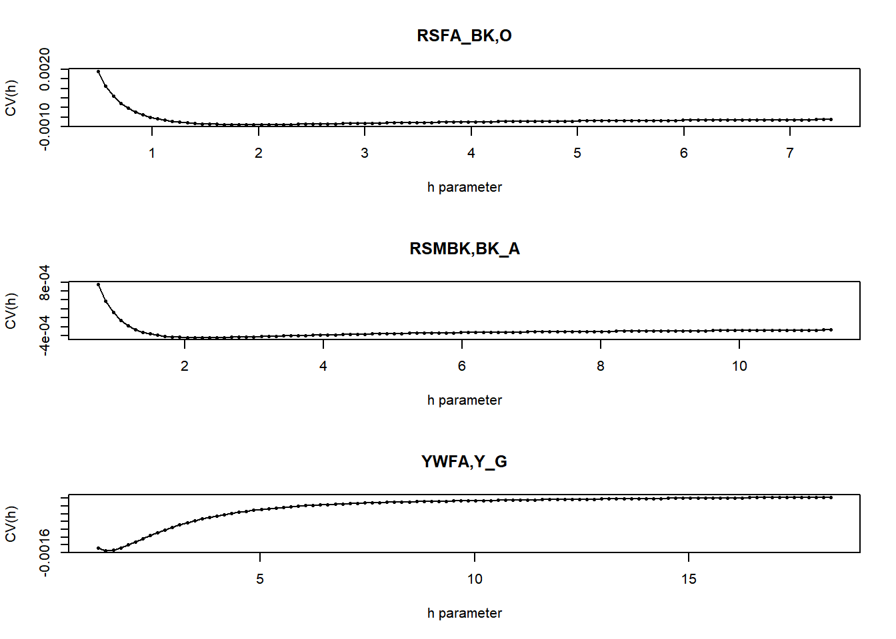
To calculate the home range size we can first convert the kernel density function into a SpatialPolygonsDataFrame:
homerange <-
getverticeshr(kud)
class(homerange)## [1] "SpatialPolygonsDataFrame"
## attr(,"package")
## [1] "sp"We can visualize the polygon:
plot(
homerange,
col=1:3) 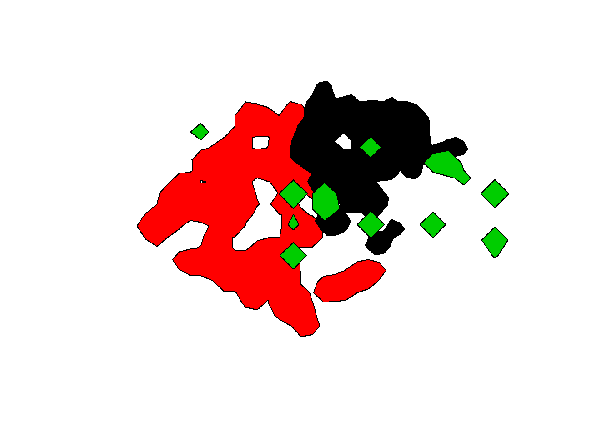
When calculating home ranges we are usually interested in calculating area for different isopleths (utilization distributions [UDs]). For example, the 95% home range corresponds to the smallest area on which the probability to relocate the animal is equal to 0.95. 95% is the standard for “home range size” and 50% is often used for the “core area”. Again areas are in hectares.
kde.areas <-
kernel.area(
kud,
percent=c(50,95))
kde.areas## RSFA_BK.O RSMBK.BK_A YWFA.Y_G
## 50 0.03457259 0.05955412 0.01135100
## 95 0.12737271 0.22303603 0.03405299We can plot different isopleths. Let’s try it for the second animal only. getvolumeUD modifies the UD so that each pixel represents the percentage of the smallest home range containing the pixel. I.e. Darker colours represent areas more frequently occupied.
vud <-
getvolumeUD(kud)
# Visualize 2nd bird:
image(vud[[2]])
xyzv <-
as.image.SpatialGridDataFrame(vud[[2]])
contour(
xyzv,
add=TRUE)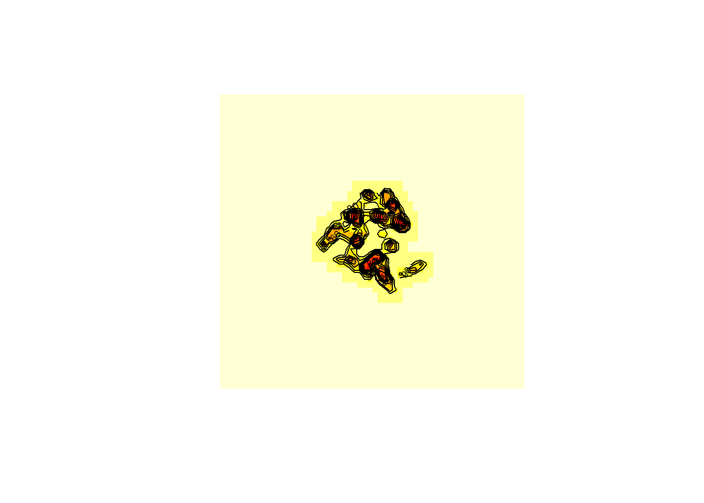
Let’s try calculating the KDE home range using “href” instead of LSCV since those isolated homerange blobs look weird!
kud1 <-
kernelUD(
locs1[,1],
h="href")We will convert the 95 KDE as vectors
homerange1 <-
getverticeshr(
kud1,
percent = 95)Plot the vector and the points
plot(
homerange1,
border=1:3,
lwd=6)
plot(
locs1,
col=as.data.frame(locs1)[,1],
add=T)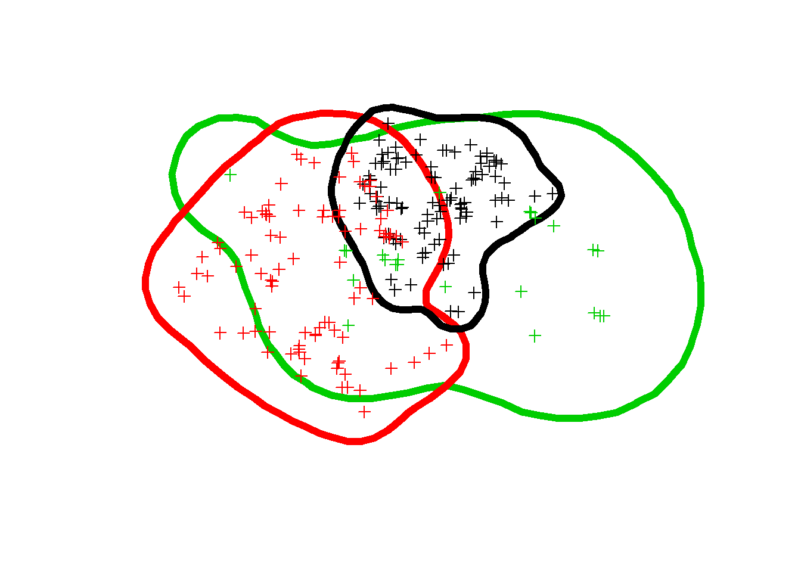
This looks better than before. You should use your knowledge of the ecology of the animal to decide which home range method to use.
Again we can export the shapefiles for the 95% KDE “href” version of the home ranges:
writeOGR(
homerange1,
dsn="95KdeHref.shp",
layer="95kde",
driver="ESRI Shapefile")As well as the 50 KDE, the “core area”:
# Convert to polygon/vector
core <-
getverticeshr(
kud1,
percent = 50)
# Plot the vector and the points
plot(
core,
border=1:3,
lwd=4,
lty = "dashed",
add = T) And export the shapefiles for the 50% KDE href version.
writeOGR(
homerange1,
dsn="50KdeHref.shp",
layer="50kde",
driver="ESRI Shapefile")See bonus code at the end for code to perform a bootstrap to assess sample size requirements for home range determination.
Exercise 1:
Now let’s take what we have learned and try it out on a new dataset. “BelizeTrackingDataSMSC” is a new set >of locations estimates from radio-tracking wood thrush on their wintering grounds in Belize. Read in these data using the following code:
BelizeTrackingDataSMSC <-
read.csv(
"https://www.dropbox.com/s/iofzreo4nlwh3n4/BelizeTrackingDataSMSC.csv?dl=1",
header = T,
na.strings=c("NA", "NULL", "", "."))Use the tools >above to calculate: > >(1) The area of 95% Minimum Convex Polygon for individual #2 >(2) The area of the 50% and 95% KDE using LSCV smoothing parameter >(3) Plot the 50%, 95% and points of the KDE using LSCV.
Remote Sensing
Often times when we are calculating home range we are also interested in determining the environmental characteristics of the home ranges of different birds. Many of these can be assessed on the ground using vegetation, insect or fruit surveys. Additionally there is a wealth of information that can be assessed from remote sensing data (Pettorelli et al. 2014). This can be particularly useful when tracking data is from geolocator or satellite tracking. In this section I will show you a simple example of how to extract data from a remote sensing layer.
A huge resource of remote sensing data is available for free online. One thing to keep in mind is many products that are available are not fully processed so additional steps may be required before they can be use to extract environmental conditions. Today we will be using a pre-processed product called Landsat Tree Cover Continuous field. It is available on the Global Land Cover Facility website (http://glcf.umd.edu/). This layer provides estimate of the percentage of tree cover greater than 5-m in height and is derived from Landsat satellites.
We are going to use the Landsat Tree Cover Data to estimate the percent tree cover on the 2 wood thrush home ranges from Belize.
Loading the raster file
To start off let’s bring in the raster file. I have already downloaded the correct tile from the Global Land Cover Facility website. Most satellites have a shapefile or kml file that can be used to determine the correct tile for your study location. In this case the correct tile is Path # 19 Row #48.
treeCover <-
raster("p019r048_TC_2015.tif")Let’s take a moment to explore this file:
treeCover## class : RasterLayer
## dimensions : 7051, 8091, 57049641 (nrow, ncol, ncell)
## resolution : 30, 30 (x, y)
## extent : 204285, 447015, 1812885, 2024415 (xmin, xmax, ymin, ymax)
## coord. ref. : +proj=utm +zone=16 +datum=WGS84 +units=m +no_defs +ellps=WGS84 +towgs84=0,0,0
## data source : C:\Users\Guest user\gits\smbc-nzp.github.io\mb2018\p019r048_TC_2015.tif
## names : p019r048_TC_2015
## values : 0, 255 (min, max)We can see that the raster has a 30m x 30m resolution, which is pretty good, the coordinate reference system, the extent and the range of values.
Let’s plot the raster:
plot(
treeCover,
col = rev(terrain.colors(200)))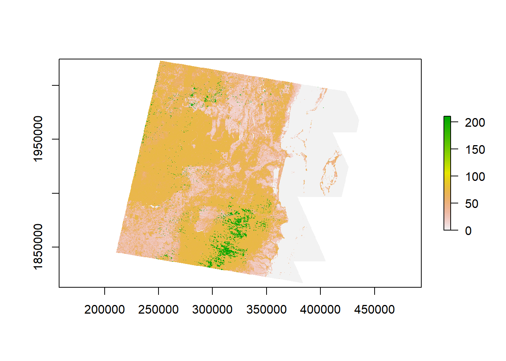
Take note the maximum value over 200, remember each pixel should represent a percentage of tree cover. The values over 100 are where the pixels representing errors are coded. Water = 200, Cloud = 210, Shadow = 211 and Filled Values = 220. Since we are not interested in using those values let’s go ahead and turn them into NAs.
#dummy raster to get rid of over 100
treeCoverNa <-
treeCover
#make >100 NA
treeCoverNa[treeCoverNa>100]<-NA Because this raster is large, that took awhile. You can quicken the process by cropping the raster first. Let’s plot the new raster
plot(
treeCoverNa,
col = rev(terrain.colors(100)))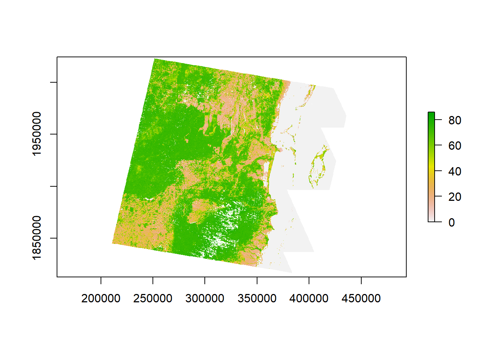
That looks much better.
Working with Polygons
We can now bring in our home range polygons. For this exercise let’s use the 95% polygons.
homeRange95 <-
shapefile("95KdeHrefWOTH.shp")
# Take a look at the polygon
summary(homeRange95)Let’s plot the homeranges on the tree cover raster
plot(
treeCoverNa,
col = rev(terrain.colors(100)))
plot(
homeRange95,
border=1:2,
lwd=6,
add=T)Let’s go ahead and crop the raster to the size of the polygon, working with large rasters will just slow down your computations.
# Will use extent function *2 in order to crop the raster slightly larger
# than the extent of the two polygons:
treeCoverCrop <-
crop(treeCoverNa,
extent(homeRange95)*2)Let’s plot again.
plot(
treeCoverCrop,
col = rev(terrain.colors(100)))
plot(
homeRange95,
border=1:2,
lwd=6,
add=T)Now that the raster is smaller we can explore some summary data from the raster file.
hist(treeCoverCrop)cellStats(treeCoverCrop, 'mean')
cellStats(treeCoverCrop, 'min')
cellStats(treeCoverCrop, 'max')Extracting values to polygon
We can extract values from the raster values to polygons using the same extract function we used to extract values to points. Let’s look at the average tree cover
meanTreeCover<-raster::extract(
treeCoverCrop,
homeRange95,
fun=mean,
na.rm = TRUE,
sp=T) #mean value of all pixelsLet’s view the mean tree cover:
meanTreeCoverYou can also view it as a tibble using the as_tibble function.
Exercise 2:
- Extract the median and standard deviation from treeCoverCrop to the homeRange polygons by changing the function argument. View the results as a tibble.
- Extract the mean value from treeCover to the 95% Minimum Convex Polygon you generated from the wood thrush location estimates. How does it compare to the mean value from the 95% KDE estimate?
References
Calenge, C. 2006. The package âadehabitatâ for the R software: A tool for the analysis of space and habitat use by animals. Ecological Modelling 197:516â“519.
Lair, H. 1987. Estimating the location of the focal center in red squirrel home ranges. Ecology 68:1092â“1101.
Pettorelli, N., K. Safi, and W. Turner. 2014. Introduction: Satellite remote sensing, biodiversity research and conservation of the future. Philosophical Transactions of the Royal Society of London B Biological Sciences 369:20130190.
Seaman, D., and J. Millspaugh. 1999. Effects of sample size on kernel home range estimates. The journal of wildlife ⦠63:739â“747.
Worton, B. 1989. Kernel methods for estimating the utilization distribution in home-range studies. Ecology 70:164â“168.
Bonus Code: How many points are enough?
This is code for one of the Belize birds (164.704).
First create a spatialPointsDataFrame for the individual bird:
locsWoth <-
read.csv(
"https://www.dropbox.com/s/iofzreo4nlwh3n4/BelizeTrackingDataSMSC.csv?dl=1",
header = T,
na.strings=c("NA", "NULL", "", ".")) %>%
dplyr::filter(ident=="164.704")
xytWoth <-
subset(locsWoth,
select = c(x_proj,y_proj))
idWoth <-
subset(locsWoth,
select = ident)
locs1Woth <-
idWoth
coordinates(locs1Woth) <-
xytWoth
# Assign coordinate reference system:
proj4string(locs1Woth) <-CRS("+proj=utm +zone=16 +datum=WGS84")Now create an empty dataset to put the results of the bootstrap in.
Vol95.1 <-
matrix(
0,
nrow=20,
ncol=nrow(locs1Woth)-4) #nrow is number of samples - 100 would be ideal but will take forever. Only doing 20.The below code is a nested for() loop to run the bootstrap. This step does the calculation from sample size 10 until the length of the dataset
set.seed(0)
for (x in 10:nrow(locs1Woth)) {
for (k in 1:nrow(Vol95.1)) {
rows <- sample.int(nrow(locs1Woth), x) #creates a random permutation of our spatialDataFrame of size x
kud1 <- kernelUD(locs1Woth[rows,], h="href")
area<-getverticeshr(kud1, percent = 95)
Vol95.1[k,x-4] <- area$area
}
}
write.csv(Vol95.1,"asymptoteWOTH.csv")#export dataGraph the results:
library(ggplot2)
df<-as.data.frame(Vol95.1)%>%#Reorganize the data matrix in long form for plotting
gather("sampleSize","area",1:44)%>%
dplyr::mutate(sampleSize=as.numeric(gsub("V", "", sampleSize)))%>%
dplyr::filter(sampleSize>6)
plot(df)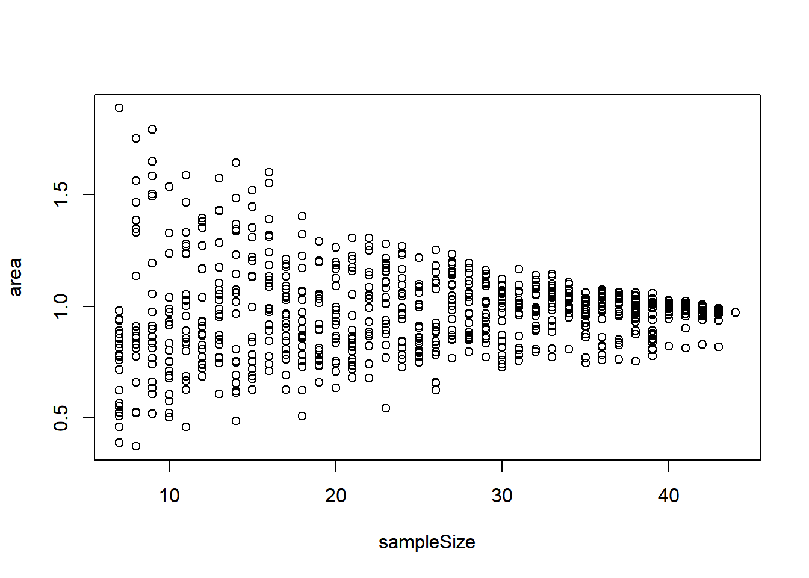